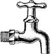
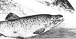

Congress ended 1986 with a flurry of activity just prior to the elections, and many of the bills considered at the last minute were environmental. Of greatest concern were reauthorization of the Clean Water Act and the Superfund. They passed Congress comfortably-in fact, the House and Senate both unanimously approved the water bill.
But the White House wasn't quite so enthusiastic. President Reagan did reluctantly sign the Superfund bill, which replenishes the fund used to clean up abandoned toxic waste dumps to the tune of $8.5 billion. He didn't like the price tag but was persuaded by fellow Republicans that a veto would be very costly at the polls.
But $18 billion for the Clean Water Act renewal was more than the president could swallow. He sat on the bill until Congress had adjourned and the elections were history. Then he vetoed it.
Congressional sponsors reintroduced the Clean Water Act as their first order of business when they returned in January. Its progress bears watching.
The Columbia Gorge National Scenic Area in Oregon and Washington, a top priority of environmental groups for more than a decade, finally made it through.
Offshore oil leasing was banned in California until at least 1989.
Four rivers were designated as wild and scenic: Cache la Poudre in Colorado, Black Creek in Mississippi, Saline Bayou in Louisiana, and the Horse pasture near MOTHER's home in North Carolina.
The sale of 82,000 acres of oil shale bearing lands in Colorado to three energy companies for $2.50 per acre was temporarily banned.
Drilling for steam on the boundaries o Yellowstone, Lassen, Mount Ranier, and other parks and public lands was restricted until strict guarantees are in place to protect geysers and other natural features from adverse effects.
California voters approved a sweeping new law aimed at curbing chemical waste problems. It does the following:
increases fines for "midnight dumping"; requires the governor to compile a list of chemicals "known by the state to cause cancer"; forbids any private company with more than 10 employees from discharging any of the chemicals on the governor's list into fresh waters in the state; requires these companies to notify the public of any exposure to the chemicals and the possible consequences (the cigarette pack warning writ large); and allows any individual to sue any polluter suspected of violating the discharge restrictions of the law whether he or she is personally harmed or not-and to keep 2507o of any civil or criminal penalties assessed against the defendant.
The law goes into effect in stages over the next year and a half. Proponents have offered to help adapt it for use in other states. Anyone interested in further details should write to Carl Pope, Sierra Club, 730 Polk St., San Francisco, CA 94109.
The state of Washington's Department of Ecology has responded favorably to a request from the Sierra Club Legal Defense Fund to regulate salmon farming. The DOE has imposed a moratorium on permits for new pens and has commissioned an extensive study of the environmental impact of the 20-some pens now operating.
The Court of Appeals in San Francisco has upheld a ban imposed last year on placer mining in Alaskan national parks until the Park Service can come up with regulations that will protect streams adequately.
The Park Service has issued regulations to control small planes and helicopters that are disturbing the serenity of the Grand Canyon, but environmentalists have denounced the regs as inadequate.
The situation on the D'Arbonne National Wildlife Refuge (see Econotes, issue 102) has improved somewhat with an agreement by the gas-drilling company to keep its equipment away from habitat needed by the endangered red-cockaded woodpecker.
The Sacred Paw: The Bear in Nature, Myth, and Literature by Paul Shepard and Barry Sanders (Viking, 1986, $17.95) is an enthralling collection of fact and myth about the eight (yes, only eight) species of bears worldwide. One startling assertion: In many surprising ways, the bear is more like man than the more closely related primates are. Highly recommended.
Look for a widely supported bill to attack the problem of acid rain.
The Price-Anderson Act, which limits operators' liability in the event of a nuclear power plant accident, is up for renewal. Antinuclear activists have long considered this to be an Achilles' heel of the nuclear power industry.
Revision of the country's coal and onshore oil and gas leasing laws is expected.
Editor's Note: Tom Turner, a writer and editor who's worked in the environmental field for 17 years, is with the Sierra Club Legal Defense Fund, an independent environmental law firm that represents many organizations across the country. It is supported principally by private donations. For more information, write Sierra Club Legal
Defense Fund, 2044 Fillmore St., San Francisco, CA 94115.
|
|
 |
 |
|
|
|
|